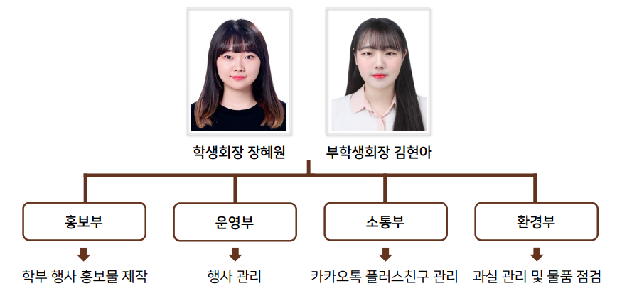
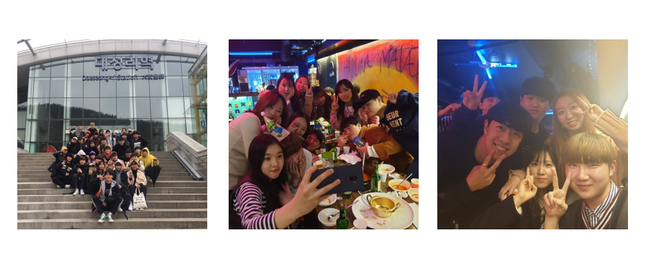
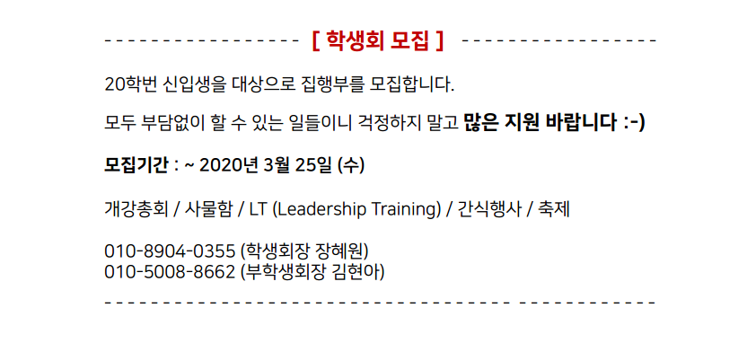

2. 학생회 소개
학생회 소개영상
회장단 / 집행부

제 4대 컴퓨터정보공학부 학생회는 홍보부, 운영부, 소통부, 환경부로, 총 4개의 집행부로 이루어져 운영됩니다.
홍보부는 컴퓨터정보공학부의 행사들의 홍보물 제작 및 홍보를 담당합니다.
운영부는 학부 행사의 실질적인 운영 및 관리 감독을 진행합니다.
소통부는 컴퓨터정보공학부만의 카카오톡 플러스친구 기능을 관리합니다.
환경부는 학부의 과실 관리 및 물품들에 대한 상태 점검 등을 확인합니다.
체계적인 자치기구들을 통해, 컴퓨터정보공학부 학우분들의 학교생활에 대한 도움을 드릴 것입니다.
활동사진

학생회의 활동들은 새로 배움터 인솔 및 감독, 학생회의 MT(혹은 LT) 진행, 간식 행사 진행, 학부 MT(혹은 과 MT) 등이 있습니다.
이러한 활동들을 통해 선/후배 간의 그리고 동기 간의 친목을 도모하며, 학교생활의 소중한 추억들을 쌓을 수 있습니다.
학생회 모집

제 4대 컴퓨터정보공학부 학생회를 모집합니다.
학생회의 일원이 되어 한 해 동안 재밌고 즐거운 추억 쌓으면 좋겠습니다.
20학번 신입생분들의 많은 지원 기다리고 있겠습니다!